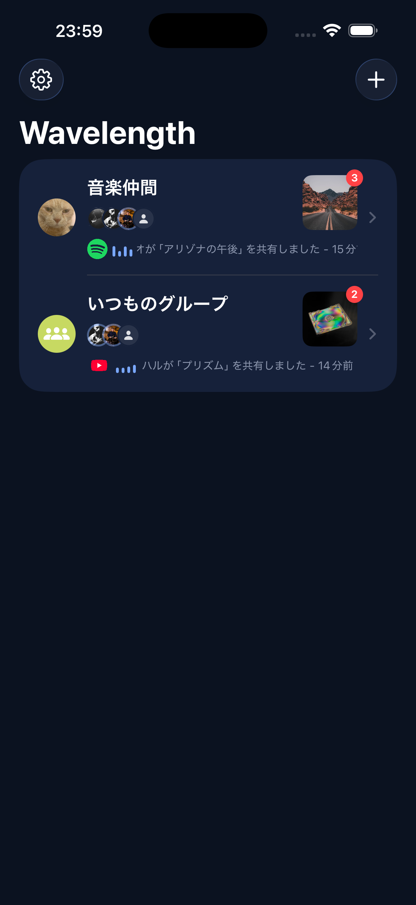
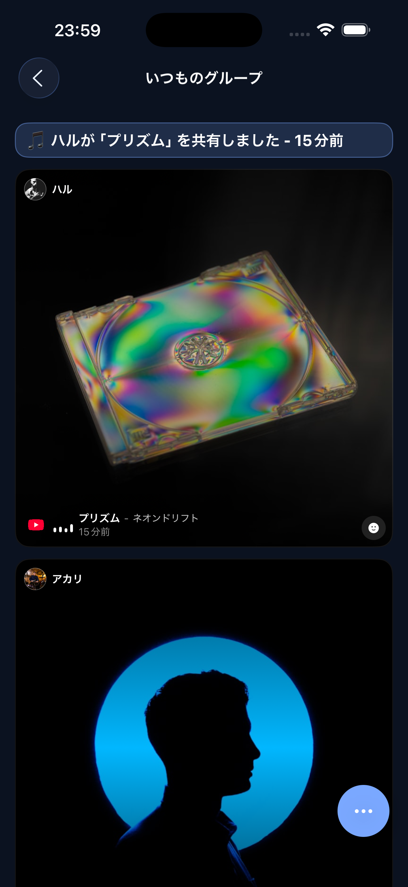
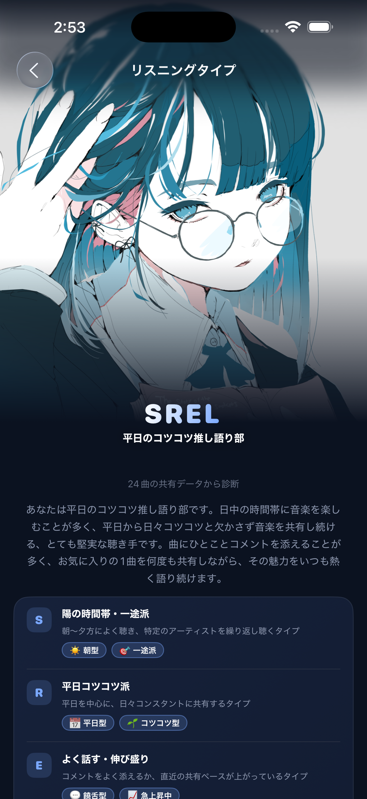
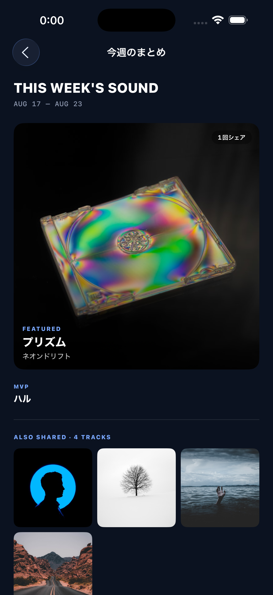
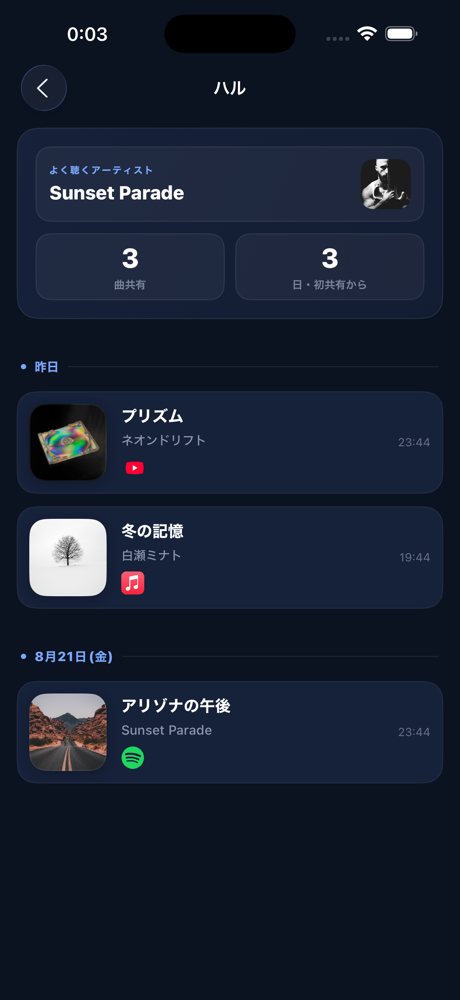
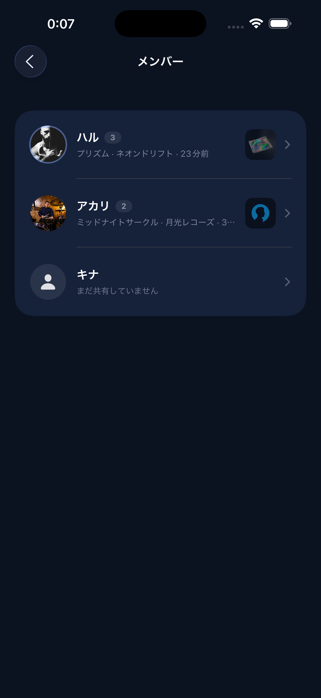

Wavelength
友達と今聴いてる曲を、リアルタイムでシェアしよう。
YouTube Music・Spotify・Apple Musicで今聴いている曲を、共有ボタン1つで友達のグループに送るだけ。 自分では取得しにいかない、「共有したい時だけ届く」シンプルな仕組みです。
グループのみんなが同じ曲を聴いていれば、それも分かります。曲にはリアクションを付けたり、 過去に共有した曲をいつでも振り返ったりできます。
できること
3つの音楽アプリに対応
YouTube Music・Spotify・Apple Musicの共有ボタンから、そのままWavelengthのグループに送れます。
リアルタイムのプッシュ通知
友達が曲を共有した時、自分の曲にリアクションが付いた時に届きます。それぞれ個別にON/OFFも可能。
同時再生を検出
グループの誰かと同じ曲を聴いていると、ひと目で分かります。
絵文字でリアクション
共有された曲に、ひとことの代わりに絵文字でリアクションできます。
共有履歴を振り返る
メンバーごとに、これまで共有してきた曲・よく聴くアーティストをいつでも見返せます。
あなたのリスニングタイプ
時間帯・多様性・曜日・一貫性など8つの軸から共有データを診断し、4文字のタイプコードとニックネームで教えてくれます。診断結果は画像にしてSNSでシェアも可能です。
全16パターンを見る →
音楽の相性診断
アーティストの重なり・同時再生の頻度・お互いへのリアクションなどから、メンバーとの音楽の相性をスコアとニックネームで診断できます。
共有ログでまとめて振り返る
グループ全員分の共有を、誰がいつ送ったか分かる形で時系列に1本にまとめて見返せます。「人気順」に切り替えれば、全期間で反応が多かった曲の殿堂入りランキングも見られます。
既読が分かる
友達が自分の共有を見てくれたかどうかが分かります。足跡を残さず見たい時はOFFにもできます。
今週のまとめ
直近1週間でよく聴かれた曲・アーティストをグループごとにまとめて確認できます。
SNS用の画像を作成
今週のハイライトを1枚のデザインされた画像にまとめて、Instagramなどにそのまま投稿できます。
複数グループ対応
友達ごとにグループを分けて、それぞれで違う表示名・写真を使い分けられます。
こんなシーンに
- 友達が今どんな曲を聴いているか、ふと気になったとき
- いい曲を見つけたので、誰かに聴いてほしいとき
- グループのみんなで同じ曲を聴いている瞬間を楽しみたいとき
- グループの「今週の流行り」を後からまとめて振り返りたいとき
スクリーンショット






近況
審査中
2026年8月、App Storeに審査を提出しました。公開までもう少しお待ちください。